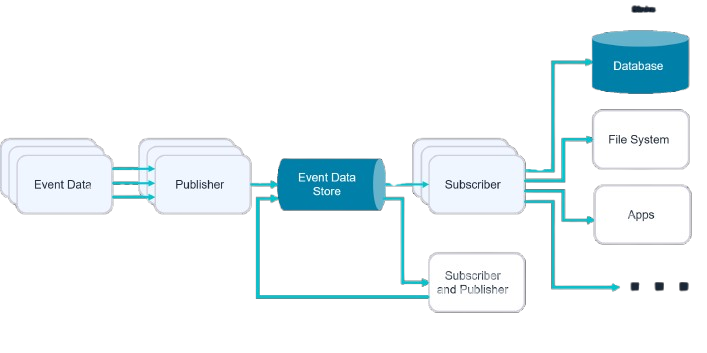
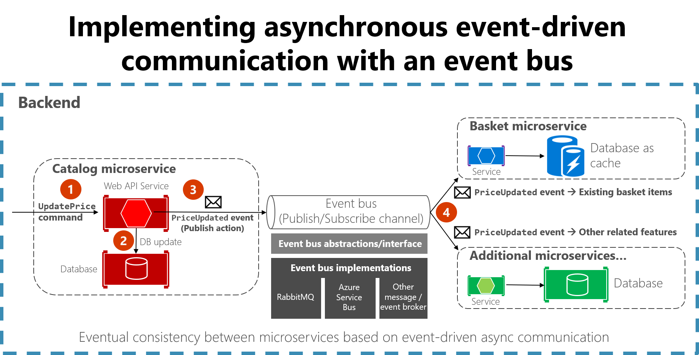

3 Eventos que no esperan: la arquitectura que reacciona en tiempo real
Palabras clave
arquitectura basada en eventos, sistemas en tiempo real, transformación digital, eventos, reactividad, microservicios
3.1 Introducción
En un entorno donde la rapidez es esencial, la arquitectura basada en eventos (EDA) ha surgido como solución clave para que los sistemas reaccionen en tiempo real ante situaciones inesperadas, siendo especialmente relevante en aplicaciones que operan sobre microservicios y sistemas distribuidos en la nube.
La adopción de EDA está impulsando la transformación digital en múltiples industrias, mejorando la agilidad, la escalabilidad y el desacoplamiento entre componentes. Este artículo explora los principios fundamentales de EDA, sus aplicaciones y las ventajas que ofrece a los sistemas modernos.
3.2 Artículo
La arquitectura basada en eventos es un patrón de diseño donde los sistemas reaccionan a los eventos a medida que se producen, representando un cambio fundamental en la construcción de aplicaciones modernas. Un sistema basado en eventos escucha y responde dinámicamente en tiempo real ante acciones significativas como una transacción de usuario, un cambio en la base de datos o la actualización de un dispositivo conectado.
Como se ilustra en la Figura 1, una arquitectura basada en eventos consta de tres componentes que trabajan en conjunto. Los productores de eventos son las fuentes que generan datos, ya sean sistemas externos, aplicaciones o dispositivos IoT. Los canales de eventos actúan como medio de transmisión entre productores y consumidores mediante un middleware o bus de eventos. Finalmente, los consumidores procesan dichos eventos ejecutando acciones como actualizar bases de datos o enviar notificaciones, de manera asíncrona, minimizando la latencia y optimizando la eficiencia operativa.

Figura 1. Componentes de la arquitectura basada en eventos.
Fuente: Hazelcast.
Los sistemas basados en eventos ofrecen importantes beneficios para las empresas. Su agilidad permite responder instantáneamente a los eventos mejorando la experiencia del usuario, mientras que el desacoplamiento de componentes facilita las actualizaciones de manera independiente. Además, su escalabilidad les permite manejar grandes volúmenes de eventos sin comprometer el rendimiento, lo que según AWS y Confluent, resulta especialmente valioso en sectores como la financiación digital y el comercio electrónico.
Los sistemas basados en eventos se utilizan ampliamente en IoT y microservicios. En IoT, los dispositivos generan eventos constantemente, como cambios en sensores de temperatura, presión o movimiento, procesándolos de inmediato y activando respuestas como el ajuste de condiciones ambientales o el envío de alertas en tiempo real. En los microservicios, esta arquitectura facilita la comunicación entre servicios independientes, permitiendo que cada uno reaccione de manera autónoma sin integraciones complejas, reduciendo la dependencia entre componentes, como lo destacan Microsoft Azure e IBM, tal como se puede observar en la Figura 2.

Figura 2. Estilo de arquitectura basada en eventos.
Fuente: Microsoft Learn.
3.3 Conclusión
La arquitectura basada en eventos está revolucionando la forma en que los sistemas responden en tiempo real, permitiendo que las organizaciones operen de manera más eficiente y escalable. Su capacidad para procesar eventos de manera asíncrona y desacoplada la convierte en una solución robusta para los desafíos tecnológicos actuales, con aplicaciones en campos como IoT, microservicios y plataformas distribuidas. A medida que más empresas adoptan este enfoque, sectores como el comercio electrónico y la financiación digital seguirán beneficiándose de su capacidad para reaccionar ante eventos sin intervención manual. En definitiva, EDA no solo representa una evolución tecnológica, sino una ventaja competitiva para las organizaciones que buscan mantenerse relevantes en un mundo cada vez más dinámico e interconectado, impulsando la innovación tecnológica en los años venideros.
3.4 Bibliografía
IBM. “Arquitectura basada en eventos.” IBM Think. Consultado el 25 de febrero de 2026. https://www.ibm.com/mx-es/think/topics/event-driven-architecture.
Google Cloud. “¿Qué es una arquitectura basada en eventos?” Google Cloud (blog), Google. Consultado el 25 de febrero de 2026. https://cloud.google.com/discover/what-is-event-driven-architecture?hl=es.
Confluent. “Arquitectura basada en eventos.” Confluent, Consultado el 25 de febrero de 2026. https://www.confluent.io/learn/event-driven-architecture/.
Hazelcast. “What Is Event-Driven Architecture?” Hazelcast. Consultado el 27 de febrero de 2026. https://hazelcast.com/foundations/event-driven-architecture/event-driven-architecture/.
Microsoft. “Estilo de arquitectura basada en eventos.” Microsoft Learn. Consultado el 27 de febrero de 2026. https://learn.microsoft.com/es-es/azure/architecture/guide/architecture-styles/event-driven.